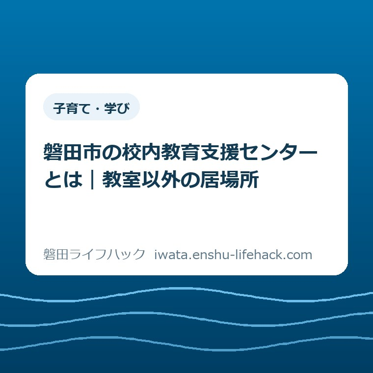

子育て・学び
磐田市の校内教育支援センターとは｜教室以外の居場所

この記事の要点
Q. 教室に入れないとき、学校の中に別の居場所はある？
A. 利用方法は子どもや学校の状況によって異なります。磐田市の校内教育支援センターは、教室に入ることに不安や困難がある子どもの校内の居場所です。市は2026年度、小学校6校への新設で全学府に設置すると発表しました。全校への設置という意味ではありません。今日は利用を決めず、在籍校の相談先を一つ確認するところからで構いません。
教室に入る前から、家族の一日は動いている
校内教育支援センターの利用方法は、子どもや在籍校の状況によって異なります。登校できる日数、教室で過ごせる時間、保護者が付き添える時間だけで、この記事から利用の可否を決めることはできません。まず、その線を引いたうえで、磐田市が増やす「教室以外の居場所」を見ていきます。
子どもの表情を見ながら起こす。学校へ連絡する。出勤の時刻を気にしつつ、玄関で待つ。登校を支える家族には、学校に着く前から手間があります。教室に入れなかったという結果だけでは、その朝に親子が使った時間や気力は見えません。制度を調べることも、家族にとっては追加の仕事です。
私は大石浩之（磐田市／不動産業）です。教育の専門家として子どもの状態を判定する記事ではありません。市の公表資料を、家族が次に何を聞けばよいかという生活の言葉に置き換えます。相談をする段階で、毎日通う約束まで背負わなくてよい。私はその順番を大切にしたいと考えます。
「学校には行けそうだけれど、教室の戸の前で止まる」。そんな困り方を、登校できるかできないかの二択だけで扱うと、話が狭くなります。この記事で知ってほしいのは、学校内にも教室とは別の場を考える仕組みがあることです。ただし、その場が本人に合うかどうかは、別に確かめる必要があります。
校内教育支援センターとは｜2026年度の増設を読む
磐田市の2026年4月の定例記者会見資料は、校内教育支援センターを、教室に入りづらさのある児童生徒を支える校内の場として説明しています。集団の教室に入ることだけを入口にせず、それぞれの必要に応じて関わるという位置づけです。学校の外にある別施設の紹介とは分けて読む必要があります。
磐田市の「校内教育支援センターの増設、外国人児童生徒支援の拡充へ」の第1項では、2026年度に小学校6校へ新設するとしています。その結果、市内の全学府に設置されるという説明です。発表資料から読み取れる変化は、この設置範囲の拡大です。
市長定例記者会見の掲載ページによると、会見日は2026年4月9日、掲載ページの更新日は4月10日です。本記事の資料確認日は2026年10月8日です。発表された年度と、このブログの投稿日を分けておけば、「10月から新しく始まった話」と取り違えずに済みます。
一方、この増設資料だけでは、各校の部屋の名称、開いている曜日、利用する時間、見学の流れまでは分かりません。新設校の個別の運用を本記事で補って断言することはしません。公表された設置の話と、本人が使うときの話との間には、学校への確認が一段残ります。
「全学府」は「すべての学校」と同じではない
磐田市の増設資料でいう「学府」は、中学校区を指します。全学府に校内教育支援センターがあるという説明は、全小中学校に一つずつ置くという説明ではありません。地域を単位にした言葉と、一つの学校を単位にした言葉を分けると、発表の読み方が変わります。
ここは、意外に見落としやすいところです。「全」と書いてあるため、自分の子どもの学校にも同じ部屋があると思いたくなります。しかし、全学府という範囲から、在籍校の設置状況までは決まりません。学校名を添えて確かめる理由は、この言葉の違いにあります。
さらに、同じ学府内の学校に設置されていることと、その学校の部屋を別の学校の子が使えることも別です。他校の利用ができるかどうかは、この資料では確認できません。「近くの学校にあるから、そこへ行けばよい」と先回りせず、在籍校に相談して、本人に関係する選択肢を聞く形が確実です。
私は、家族が最初に調べる単位を市全体から在籍校へ絞ると、調べ物の負担を小さくできると考えます。市内の設置校一覧を全部集めなくても、まず「うちの学校では誰に相談すればよいか」が分かれば、次の会話につながります。使えそうな場を探すことを、保護者一人の宿題にしないためです。

校外の教育支援センターとは、申込みの話を分ける
磐田市の教育相談ページに載る教育支援センターの入級手続きは、校内教育支援センターの共通の申込手順として読み替えないでください。同じ「教育支援センター」という言葉を含んでいても、相談する場や手続きの説明を区別して読む必要があります。
市の「いじめ、非行などの問題行動や不登校」の案内では、教育支援センターについて、希望を伝え、事前相談、体験入級を経て、在籍校の校長へ入級願を出す流れを示しています。これは同ページの教育支援センターの手続きです。校内でも必ず同じ書類を出す、と広げて説明する根拠にはなりません。
校内の居場所について聞くときは、「在籍校の中で、教室以外に過ごす場所の相談をしたい」と言葉を足すと、何を知りたいかが伝わります。校外の支援も考えているなら、その旨を別に伝えます。名称を正しく暗記するより、どこで過ごすことを想定しているかを言えるほうが、相談の行き違いを減らせます。
窓口の全体像は、当サイトの教育相談の案内に整理しています。本記事は窓口を網羅するためのものではなく、学校内の居場所が増える意味を考える読み物です。校内の話が進みにくい場合も、それだけで市の相談先がなくなるわけではありません。
2026年10月8日に確認した市の案内では、不登校などの相談を受ける児童生徒支援課の電話は0538-37-4923です。相談は電話・面談で、月曜から金曜の午前8時30分〜午後5時15分、祝日を除きます。在籍校の連絡先や担当が分からない場合の相談先として、市の公式案内を参照できます。

良い点｜教室に入るまでの時間も、支える対象になる
校内教育支援センターの増設について私が良いと考えるのは、教室へ入ることが難しい状態そのものに、学校内で向き合う場を広げる点です。教室に入れない時間を、何もできていない時間と扱わずに済む。公表された居場所の考え方を、私はそう受け止めています。
家族にとっては、相談の言葉が一つ増えることにも意味があります。「登校させるにはどうすればいいですか」だけでなく、「教室以外の場所について聞きたいです」と尋ねられます。保護者が結論を用意してから学校へ連絡する必要はない。何を相談したいかを短く言えることが、最初の連絡を支えます。
私が評価するのは、部屋があるという数だけではありません。学校との関わりを、本人の状態に合わせて相談する余地が見えることです。ただし、居場所が増えた事実から、必ず登校しやすくなる、学習の遅れがなくなる、といった効果を約束することはできません。場所の存在と、本人に合う支援は分けて考えます。
家庭でできることも、一つの形に固定しなくてよいと私は考えます。例えば、本に触れる方法なら磐田市の電子図書館と紙の本の比較があります。これは校内支援の代わりでも、登校を促す課題でもありません。学校の話とは別に、本人が望む時間の過ごし方を考える材料です。
注文したい点｜家族が知りたいのは、人数より次の連絡先
校内教育支援センターの案内に私が注文したいのは、在籍校で最初に誰へ声をかければよいかを、保護者が迷わず見つけられることです。増設の発表には意味があります。そのうえで、朝の連絡と仕事の調整をしている家族には、制度名から相談相手へたどり着くまでの距離も負担になります。
これは、学校で案内が行われていないという断定ではありません。各校からどのような案内が届いているかを、本記事では調査していません。私の注文は、今ある資料を読む保護者の側からのものです。学校からの配布物で担当や連絡方法が分かるなら、その案内を優先して使うのが自然です。
同時に、「相談したら利用を決めなければならないのか」という不安に、案内の中で答えがあると助かります。相談と利用開始の間に、何を話し合い、誰が決めるのか。その手順が分かれば、保護者は子どもに説明しやすくなります。私が望むのは、利用する人数を増やすためだけでなく、考える時間も守る説明です。
家族への説明では、校内と校外の名前の似かよりにも配慮してほしいと考えます。別の窓口へ電話してしまった人が、もう一度すべてを説明するのは楽ではありません。「学校内の場の話か」「校外の施設の話か」を先に確かめるだけでも、相談のやり直しを減らす助けになるはずです。
学校に伝える材料は、完成した説明でなくてよい
在籍校へ校内の居場所について相談するとき、家庭で原因を突き止めた説明書を作る必要はない、と私は考えます。最初の連絡では、分かっている困りごとと、まだ分からないことを分けて伝える方法を提案します。以下は市が定めた提出項目ではなく、会話を始めるための編集上の例です。
例えば「校門までは行けるが、教室に入る前に止まる」と分かっているなら、その範囲を伝えます。理由を本人が説明できないときは、「理由はまだ聞き取れていない」で構いません。友人関係や授業が原因だと決めつけて話を作ると、本人が話したかった困り方から離れるおそれがあります。
本人が話した言葉と、保護者が心配していることも、分けておくと伝えやすくなります。「本人はこう言った」「親としてはこの時間が心配」と分けるだけです。長い記録や登校できた日数の集計を、最初の相談の条件にする提案ではありません。記録する余裕がなければ、一文から始める方法もあります。
学校の話を家庭で出すこと自体が負担になっているなら、その状況も相談の材料です。子どもに詳しい説明を何度も求めてからでなければ連絡できない、と家族だけで抱え込む必要はないと私は考えます。本人にどう伝えていくかも、相談相手が分かってから一緒に考える話にできます。
支援の名前を知った直後に、別の活動も次々と勧めることは避けたいと私は考えます。SPO☆CUL IWATAと休日部活の違いも学びや活動の選択肢を整理した記事ですが、校内教育支援センターの利用案内ではありません。活動の参加と居場所の相談を、一つの決断に束ねないことが家族の負担を抑えます。
対案・結論｜今日は在籍校の相談先を一つ確認する
磐田市の校内教育支援センターについて今日できる一歩は、在籍校で相談を受ける相手を一つ確認することです。利用開始日、通う頻度、教室へ戻る予定まで、同じ日に決める必要はありません。私は、相談相手の名前や担当が分かったところを、その日の区切りにする方法を勧めます。
連絡文の例はこうです。「教室に入りづらい様子があります。学校内で教室以外に過ごす場所について、相談できる先生を教えてください。利用するかは、まだ決めていません」。事情に合わせて短く直して使えます。市の指定文面ではなく、保護者が尋ねたいことを一つに絞った例です。
連絡には、在籍校が案内している方法を使います。普段使う連絡帳や電話などで相談先を尋ね、詳しい話をする時刻は相手と調整します。学校ごとの連絡方法を本記事から指定することはできません。最初の相手が担当でなくても、話をつないでもらえるかを尋ねるところから始められます。
相談が進んだら、次の話題として、場所を見られるか、過ごし方をどう相談するか、予定を変えるとき誰へ連絡するかなどを聞く方法があります。いずれも「できる」と確認済みのサービスではなく、学校へ尋ねる項目です。今日はその質問を全部こなす日ではありません。相手が分かれば、必要な順に話せます。
家族の中で共有するなら、「担当は誰か」「次の連絡は誰がするか」を残す程度で十分ではないかと私は考えます。大人同士で同じ説明を繰り返す手間を減らすためのメモです。子どもの言葉を広く共有するための記録ではありません。誰に何を伝えるかは、本人への配慮も含めて相談していく話です。
大石の視点｜相談と決断を、一緒に背負わせない
校内教育支援センターを知った家族に、私は「すぐ利用を決めよう」とは言いたくありません。相談先を聞くことと、明日から利用すると約束することは別だ。まだ決められない状態には理由があります。今日は判断の材料が一つ増えればよい。この線を、制度を紹介する側が先に引いておきたいと考えます。
私にも迷いがあります。居場所を知らせる言葉が、親子に「そこなら行けるはず」という新しい圧力にならないか、という迷いです。場所が増えることは良い変化です。それでも、本人が安心できるかは紹介文では決められません。この記事を読んだことが、明日の登校を約束する理由になってほしくありません。
不動産の仕事をする私がここで述べているのは、教育相談を受けた実話ではなく、家族の段取りについての意見です。公表資料にある仕組みを知ることと、個別の子どもに何が合うかを判断することは違います。後者をこの記事で代行せず、学校や市の相談先につながる材料を残します。
家族がすでに払っている手間を認めるなら、新しい制度の紹介も、新しい宿題を山積みにする形にはしたくありません。全学府と全校の違いを知る。校内と校外を分ける。そして今日は、在籍校の相談先を一つ確認する。それで次に考える場所ができる、と私は考えます。
よくある質問
磐田市の校内教育支援センターについて、設置の範囲と相談の入口を確認します。個別の利用方法は在籍校へ尋ねてください。
磐田市のすべての学校に設置されていますか？
市の2026年4月の発表は、小学校6校への新設で全学府（中学校区）に設置するという内容です。全校に一つずつあるという意味ではありません。在籍校の設置状況や利用方法は学校へ確認してください。同じ学府の他校にある場合も、そこを利用できると本記事から判断することはできません。
校外の教育支援センターと同じ申込みが必要ですか？
市の教育相談ページにある事前相談、体験入級、入級願提出という流れを、校内の共通手順として扱うことはできません。校内の居場所については、在籍校で相談先を確かめてください。校外も検討する場合は、その旨を別に伝え、市の教育支援センターの公式案内で対象や手続きを確認する形になります。
利用を決めていない段階では、何を聞けばよいですか？
まずは在籍校で、教室以外に過ごす場所について誰に相談すればよいかを尋ねる方法があります。「利用するかはまだ決めていない」と添えて、現在の困りごとを分かる範囲で伝えます。この記事は利用可否を決めるものではありません。子どもや学校の状況に応じた進め方は、相談先と確かめてください。
参考にした公式情報
- 2026年4月会見資料・校内教育支援センターの増設／磐田市（2026年10月8日確認）
- 市長定例記者会見（2026年4月）／磐田市（2026年10月8日確認）
- いじめ、非行などの問題行動や不登校／磐田市（2026年10月8日確認）
最終確認日：2026-10-08 ／ 本記事は公表情報と執筆者の見解を分けて記載しています。制度・数値・公開状況は変更される場合があるため、最新情報は磐田市公式ページでご確認ください。
 大石浩之／磐田市／不動産業・宅地建物取引士
大石浩之／磐田市／不動産業・宅地建物取引士
利用条件や運用は子ども・学校の状況で異なり、変更される場合があります。個別の支援は在籍校や市の相談担当者に相談し、最後は磐田市公式ページで最新情報をご確認ください。